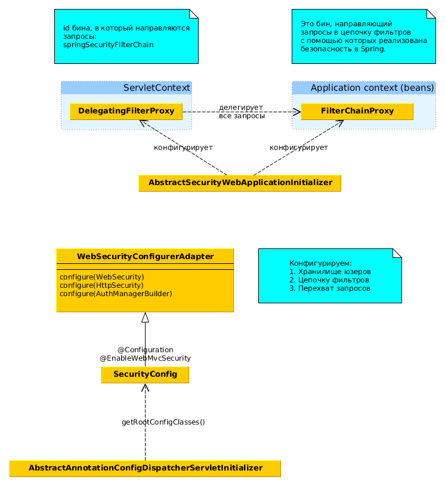
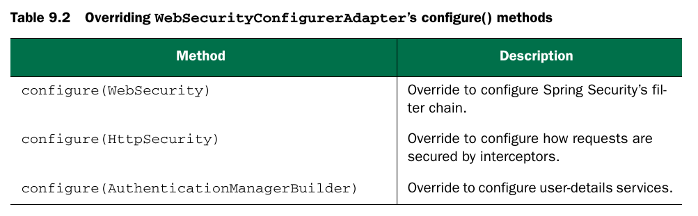
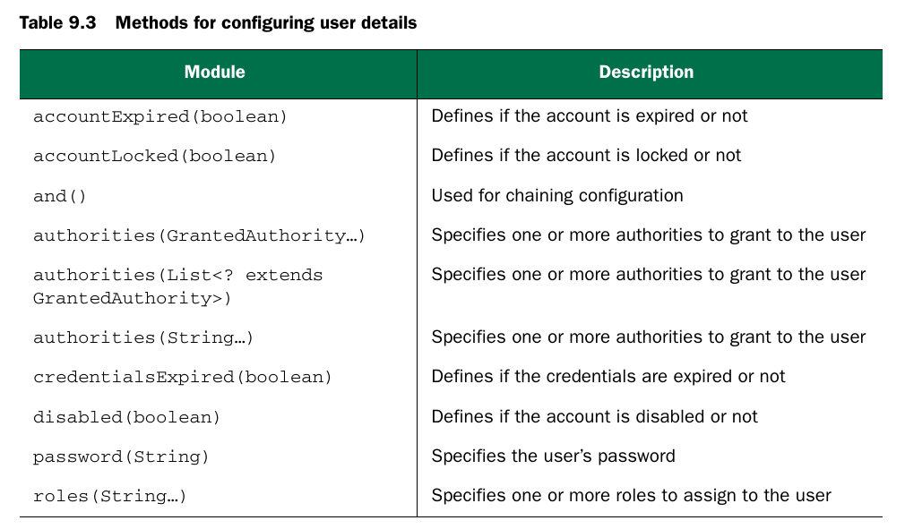
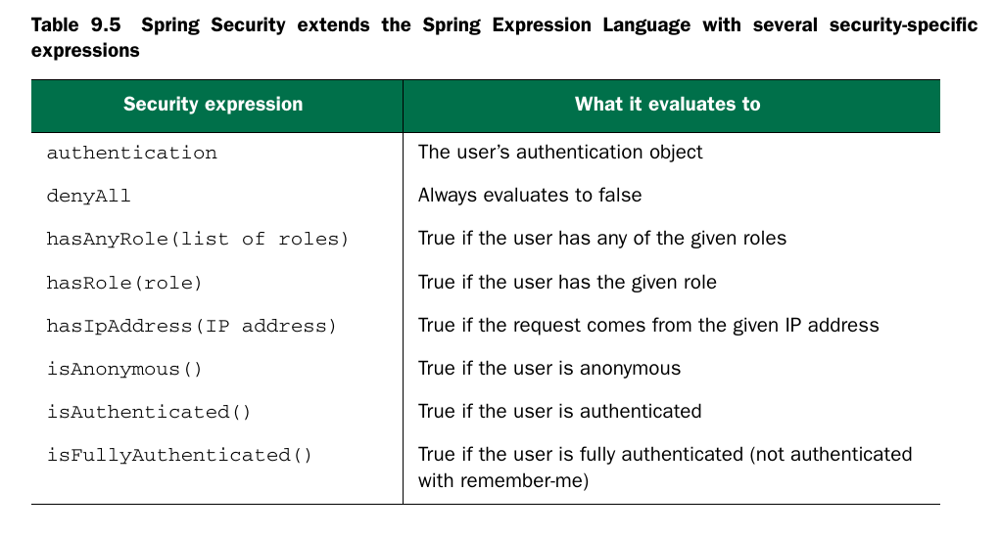

Web secutiry

- Для веб-приложения нужно добавить в CP: core,configuration,web.
- Web-безопасность в спринг реализована как набор web-фильтров. DelagatingFilterProxy направляет все запросы в специальный бин (id = springSecurityFilterChain), в качестве которого обычно выступает FilterChainProxy.
- FilterChainProxy направляет запрос в цепочку secutiry фильтров Spring. 
- DelagatingFilterProxy конфигурируется либо в web xml, либо программно.
- Конфигурируем security в WebMvc-приложении:
//конфигурация аутентификации и авторизации
@Configuration
@EnableWebMvcSecurity
//@EnableWebSecurity
public class SecurityConfig extends WebSecurityConfigurerAdapter {
}
//конфигурация фильтров безопасности спринг
public class SecurityWebAppInitializer
extends AbstractSecurityWebApplicationInitializer {
}

- Возможно хранить аутентификационные данные в памяти (см код SecurityConfig), методы хранилища в памяти: 
- Role это GrantedAuthority с префиксом ROLE_
- GrantedAuthority это некоторое разрешение или "право".
- UserDetailsService - это интерфейс, используемый для поиска пользователей в некотором хранилище данных:
public interface UserDetailsService {
UserDetails loadUserByUsername(String username)
throws UsernameNotFoundException;
}

- Можно использовать SpEL для конфигурации авторизации:


- CSRF - cross-site request forgery - если юзер залогинен на одном сайте, то можно отправить потенциально вредоносную команду с другого сайта на первый.
- По умолчанию в спрингах включена CRSF-защита и каждая форма должна иметь поле, которое содержит некий секретный токен:
<inputtype="hidden"
name="${_csrf.parameterName}"
value="${_csrf.token}" />
- CSRF отключается в WebSecurityConfigurerAdapter.
- Можно использовать и базовую http-аутентификацию.